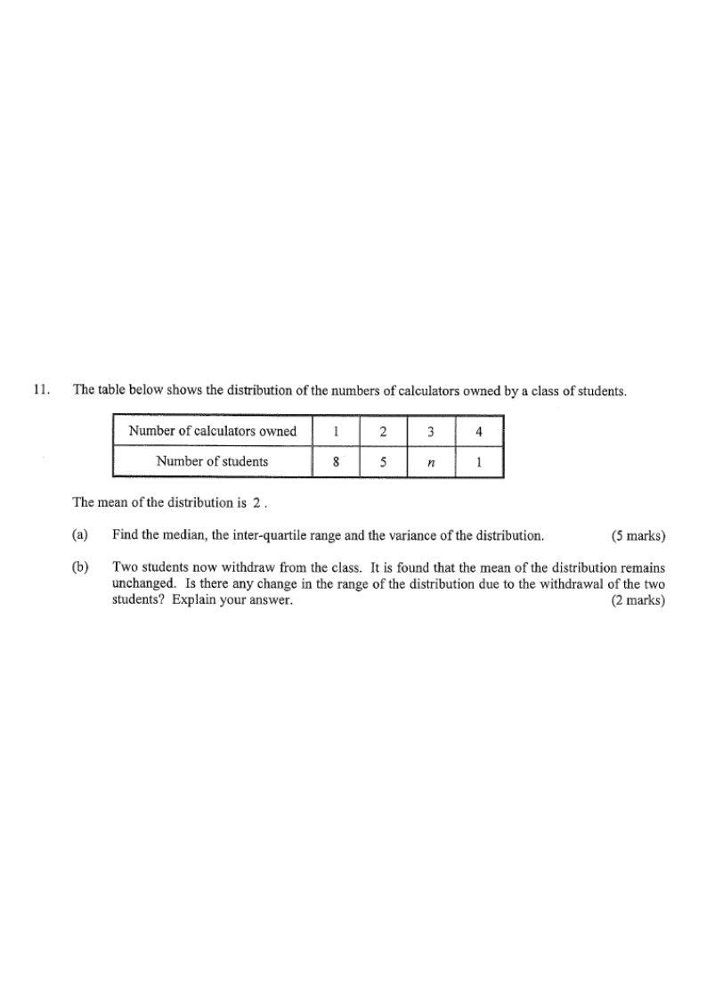

The table below shows the distribution of the numbers of calculators owned by a class of students.
Number of calculators owned
1
2
3
4
Number of students
8
5
$n$
1
The mean of the distribution is $2$.
(a) Find the median, the inter-quartile range and the variance of the distribution. [5 marks]
(b) Two students now withdraw from the class. It is found that the mean of the distribution remains unchanged. Is there any change in the range of the distribution due to the withdrawal of the two students? Explain your answer. [2 marks]

Figure (original exam diagram)
Solution
Step 1Find $n$ using the given mean.
Mean from a Frequency Table\(\bar{x}=\dfrac{\sum fx}{\sum f}\)With \(8+5+n+1\) students and mean \(2\), the total \(18+3n\) is divided by that count.
Total students $=8+5+n+1=n+14$, and mean $=2$:
$$\frac{1(8)+2(5)+3(n)+4(1)}{8+5+n+1}=2$$
$$\frac{18+3n}{n+14}=2 \;\Rightarrow\; 18+3n=2n+28 \;\Rightarrow\; n=10$$
Hint: total calculators owned $=$ mean $\times$ total number of students.
Step 2Ordered data (28 students).
$1,1,\dots,1$ (8 times), $2,\dots,2$ (5 times), $3,\dots,3$ (10 times), $4$ (once).
So 28 data values in ascending order.
Hint: for $m$ data values, the median is the $\frac{m+1}{2}$-th value; the quartiles split the data into 4 equal-sized groups.
Step 3Median.
Median Position\(\text{median position}=\dfrac{m+1}{2}\)For \(m=28\) values the median sits between the \(14\)th and \(15\)th values.
With $m=28$, the median is the average of the $14$th and $15$th values.
The first $8+5=13$ values are 1 or 2, positions $14$ and $15$ are both $3$.
$$\text{Median}=\frac{3+3}{2}=3$$
Hint: 14th and 15th data values both lie in the block of 3's.
Step 4Lower and upper quartiles.
Lower half $=1$st–$14$th values ($7$ values of 1, $5$ of 2, $2$ of 3).
$Q_1=\frac{2+2}{2}=2$ (7th, 8th values are both 2 because positions 6–10 are 2).
Upper half $=15$th–$28$th values. The 21st and 22nd values are $3$.
$$Q_3=3$$
Hint: $Q_3$ is the median of the upper half of the data.
Hint: use $\sigma^2=\dfrac{\sum x^2f}{\sum f}-\bar{x}^2$.
Step 7(b) Original range.
Smallest value $=1$, largest value $=4$, so the range is
$$4-1=3$$
Hint: the range depends only on the extreme values.
Step 8Mean unchanged after 2 students withdraw.
Original total calculators $=48$, original students $=28$.
Let the two withdrawn students own $a$ and $b$ calculators.
$$\frac{48-a-b}{26}=2 \;\Rightarrow\; 48-a-b=52 \;\Rightarrow\; a+b=-4\;??$$
Careful: the mean is $2$, so the remaining total must be $2\times 26=52 > 48$ — impossible. Therefore the two withdrawn students must own $0$ calculators each so that total stays: we need mean $=2$.
Hint: check the arithmetic; the withdrawn pair must keep the total mean at 2.
Step 9Case analysis (no change in range).
Original range $=3$, extremes $1$ and $4$. Case 1: both students own $2$ calculators (the two $2$'s removed): remaining extremes still $1$ and $4$, range $=3$. Case 2: one student owns $1$ and the other owns $3$: remaining extremes still $1$ (others) and $4$, range $=3$.
In both cases the range stays $3$.
Hint: only removing the single $4$ or all the $1$'s could change the range — check carefully which students leave.
Answer: (a) Median $=3$, IQR $=1$, Variance $=\frac{11}{14}\approx 0.79$.
(b) No change — the range remains $3$.
PRACTICESimilar question — try it yourself
Question. The table shows the number of calculators owned by \(20\) students: \(0\) calculators (\(4\) students), \(1\) calculator (\(5\) students), \(2\) calculators (\(8\) students) and \(3\) calculators (\(3\) students). Find the mean, the median, the inter-quartile range and the variance.
Show the worked solution
Step 1. Total \(=0(4)+1(5)+2(8)+3(3)=30\), so the mean is \(\dfrac{30}{20}=1.5\).
Step 2. With \(20\) values the median is the average of the \(10\)th and \(11\)th values, both \(2\), so the median is \(2\).
Step 3. \(Q_{1}\) is the average of the \(5\)th and \(6\)th values \(=1\); \(Q_{3}\) is the average of the \(15\)th and \(16\)th values \(=2\).
Step 4. \(\text{IQR}=Q_{3}-Q_{1}=2-1=1\).
Step 5. \(\sum fx^{2}=0(4)+1(5)+4(8)+9(3)=64\), so \(\sigma^{2}=\dfrac{64}{20}-1.5^{2}=3.2-2.25=0.95\).
Answer: mean \(1.5\), median \(2\), IQR \(1\), variance \(0.95\)